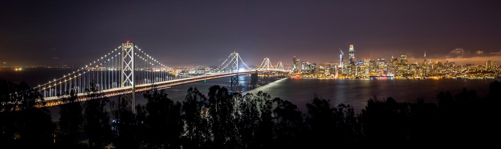

We can convert apathy to change.
How often do you find yourself hearing news about “record-high temperatures” on
your local news station? Or perhaps another wildfire to start off a sweltering summer?
And of course, we can't forget about another drought approaching in the near future.
It's more than likely that this isn't the first time you've heard an update on
climate change in California, and even moreso, you don't really care. Maybe at
best, you shrug your shoulders and think to yourself “Well, that sucks,” and
proceed to move on with your day. However, this feeling isn't something any of us
should be ashamed of. Climate change apathy is limiting the SF Bay Area's ability
to counter climate change, and with a healthy dose of optimism, we can convert our
apathy into change.
An Issue of Trust
Are you skeptical that change is possible in California? Let's take a look into some statistics.
According to a report by the Public Policy Institute of California (PPIC), a staggering 86% of
survey respondents from the SF Bay Area -- the highest of any region in the state -- agreed that
“climate change has contributed to the state's recent extreme weather events.” However, the same
report mentioned that only 20% of SF Bay Area respondents have “a great deal” of confidence that
the government can “respond to extreme weather events.”
This is where the core issue for climate change apathy lies: a disconnect between our political
legislature and local communities. So, here is my proposal to fight climate change: keep
politics local.

Grassroots Activism Works.
Let's switch gears and head down south for an example of grassroots activism: Diablo Canyon Power
Plant. Location: San Luis Obispo County. In 2016, the Pacific Gas and Electric Company (PG&E),
the owner of the plant, announced that it would close the site in 2025, and replace energy
demands with “affordable renewable power and energy storage solutions,” per a report from SFGate.
However, in 2021, a joint study by MIT and Stanford concluded that Diablo Canyon provides “15
percent of [California's] carbon-free energy,” so shutting down the plant would increase the
state's carbon emissions. On the other hand, keeping Diablo Canyon open would reduce California
carbon emissions “by more than 10 percent annually from 2017 levels” while “[saving]
ratepayers up to $21 billion” by 2045.
These benefits did not fall on deaf ears. In May 2022, a poll conducted by Carbon Free
California found that “58 percent of [California] voters [supported] continued operation” of
the nuclear power plant, and later in November 2022, NPR reported that the California
legislature voted to extend the operating life of Diablo Canyon Power Plant by an extra five years.
The Cost of Climate Change
The story of Diablo Canyon Power Plant receiving an operating life extension demonstrates
how local issues catalyze public support and translate into legislative victories. Additionally,
if you still remain skeptical about climate change, consider the economic impact of this bill.
Saving $21 billion in taxes for keeping this nuclear power plant running means lower taxes for you.
In fact, economic benefits are common among climate change initiatives. Climate change, after all,
threatens to make the planet warmer, so it should be no surprise that the conditioning bill also
increases. However, warmer temperatures are only the tip of the iceberg. Lawrence Berkeley National
Laboratory (LBNL) researchers forecast that major storms will bring “about 70% more precipitation,”
and the resulting flooding can be disastrous to not personal property, supply lines, and mental health.
Droughts can lead to certain areas in California receiving “a 10% decrease in precipitation,” and the
decrease in farming output can devastate California's agricultural sector and the national food market.

Find Your Voice
Climate change initiatives not only make our state a more livable place, but are also critical to maintaining
the state's strong economy. SF Bay Area residents are aware of climate change, and we need to translate
this knowledge to action. In your local community, I suggest you find politicians, whether they be rising
stars or seasoned veterans, that support climate change initiatives and vote them into political office. If
you are willing to take the extra step, I also suggest contacting your representatives about climate concerns
and pushing them into supporting climate change legislation. You can also contribute by entering politics
yourself, but regardless of the choice you make, remember that climate change can be mitigated, and remaining
optimistic will bring legislation.
Credits
Image credits (hyperlinks) are shown in chronological order in which they appeared in the op-ed.